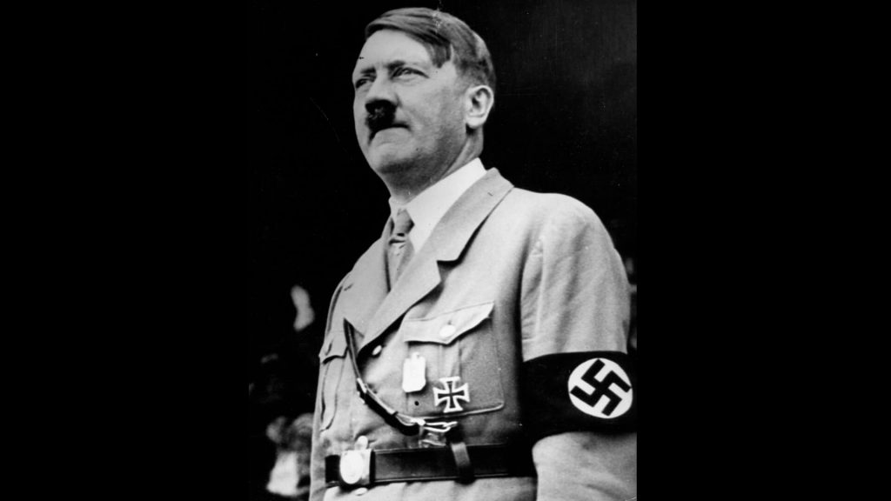
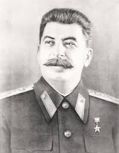
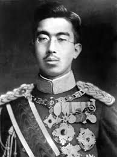

მეორე მსოფლიო ომი[b] ან მეორე მსოფლიო ომი (1 სექტემბერი 1939 - 2 სექტემბერი 1945) იყო გლობალური კონფლიქტი ორ კოალიციას შორის: მოკავშირეებსა და ღერძის ქვეყნებს შორის. მსოფლიოს თითქმის ყველა ქვეყანა - მათ შორის ყველა დიდი სახელმწიფო - მონაწილეობდა, ბევრმა ინვესტიცია მოახდინა ყველა ხელმისაწვდომ ეკონომიკურ, სამრეწველო და სამეცნიერო შესაძლებლობებზე ტოტალური ომის განსახორციელებლად, რაც ბუნდოვდა განსხვავებას სამხედრო და სამოქალაქო რესურსებს შორის. ტანკებმა და თვითმფრინავებმა მნიშვნელოვანი როლი ითამაშეს, ამ უკანასკნელმა შესაძლებელი გახადა მოსახლეობის ცენტრების სტრატეგიული დაბომბვა და ომში გამოყენებული ერთადერთი ბირთვული იარაღის მიწოდება. მეორე მსოფლიო ომი იყო ყველაზე მომაკვდინებელი კონფლიქტი ისტორიაში, რის შედეგადაც დაიღუპა 70-დან 85 მილიონამდე ადამიანი, რომელთაგან ნახევარზე მეტი მშვიდობიანი მოქალაქე იყო. მილიონობით ადამიანი დაიღუპა გენოციდებში, მათ შორის ევროპელი ებრაელების ჰოლოკოსტის დროს და ხოცვა-ჟლეტის, შიმშილისა და დაავადებით. მოკავშირეთა ძალების გამარჯვების შემდეგ გერმანია, ავსტრია, იაპონია და კორეა დაიკავეს და ომის დანაშაულების ტრიბუნალები ჩატარდა გერმანიისა და იაპონიის ლიდერების წინააღმდეგ.

მეორე მსოფლიო ომის მიზეზები მოიცავდა გადაუჭრელ დაძაბულობას პირველი მსოფლიო ომის შემდეგ და ფაშიზმის აღზევება ევროპაში და მილიტარიზმის ამაღლება იაპონიაში, და მას წინ უძღოდა მოვლენები, მათ შორის იაპონიის შეჭრა მანჯურიაში, ესპანეთის სამოქალაქო ომი, მეორე სინოს დაწყება. -იაპონიის ომი და ავსტრიისა და სუდეტის გერმანიის ანექსია. ზოგადად, მეორე მსოფლიო ომი დაწყებულად ითვლება 1939 წლის 1 სექტემბერს, როდესაც ნაცისტური გერმანია ადოლფ ჰიტლერის მეთაურობით პოლონეთში შეიჭრა. გაერთიანებულმა სამეფომ და საფრანგეთმა ომი გამოუცხადეს გერმანიას 3 სექტემბერს.

მოლოტოვ-რიბენტროპის პაქტის თანახმად, გერმანიამ და საბჭოთა კავშირმა დაყვეს პოლონეთი და გამოავლინეს „გავლენის სფეროები“ მთელს აღმოსავლეთ ევროპაში; 1940 წელს საბჭოთა კავშირმა ბალტიისპირეთის ქვეყნები და ფინეთისა და რუმინეთის ნაწილები ანექსია. 1940 წლის ივნისში საფრანგეთის დაცემის შემდეგ, ომი გაგრძელდა ძირითადად გერმანიასა და ბრიტანეთის იმპერიას შორის, ლაშქრობებით ჩრდილოეთ და აღმოსავლეთ აფრიკასა და ბალკანეთში, ბრიტანეთის საჰაერო ბრძოლა და დიდი ბრიტანეთის ბლიცი და საზღვაო ბრძოლა ატლანტის ოკეანეში. . 1941 წლის შუა პერიოდისთვის, მთელი რიგი კამპანიებისა და ხელშეკრულებების მეშვეობით, გერმანიამ დაიპყრო ან აკონტროლებდა კონტინენტური ევროპის დიდ ნაწილს და ჩამოაყალიბა ღერძის ალიანსი იტალიასთან, იაპონიასთან და სხვა ქვეყნებთან. 1941 წლის ივნისში გერმანიამ სათავეში ჩაუდგა ევროპის ღერძს საბჭოთა კავშირში შეჭრაში, გახსნა აღმოსავლეთის ფრონტი.

იაპონია მიზნად ისახავდა აღმოსავლეთ აზიასა და აზია-წყნარ ოკეანეში დომინირებას და 1937 წლისთვის ომი იყო ჩინეთის რესპუბლიკასთან. 1941 წლის დეკემბერში იაპონიამ შეუტია ამერიკულ და ბრიტანულ ტერიტორიებს სამხრეთ-აღმოსავლეთ აზიასა და ცენტრალურ წყნარ ოკეანეში, მათ შორის შეტევა პერლ ჰარბორზე, რის შედეგადაც შეერთებულმა შტატებმა და გაერთიანებულმა სამეფომ ომი გამოუცხადეს იაპონიას. ევროპის ღერძის ძალებმა სოლიდარობის ნიშნად ომი გამოუცხადეს შეერთებულ შტატებს. იაპონიამ მალე დაიპყრო დასავლეთ წყნარი ოკეანის დიდი ნაწილი, მაგრამ მისი წინსვლა შეჩერდა 1942 წელს მიდვეის საზღვაო ბრძოლაში დამარცხების შემდეგ; გერმანია და იტალია დამარცხდნენ ჩრდილოეთ აფრიკაში და საბჭოთა კავშირის სტალინგრადში. ძირითადი წარუმატებლობები 1943 წელს - მათ შორის გერმანიის დამარცხება აღმოსავლეთ ფრონტზე, მოკავშირეთა შემოსევები სიცილიაში და
იტალიის კონტინენტი და მოკავშირეთა შეტევები წყნარ ოკეანეში - დაუჯდა ღერძის ძალებს მათი ინიციატივა და აიძულა ისინი სტრატეგიული უკან დახევა ყველა ფრონტზე. 1944 წელს დასავლეთის მოკავშირეები ნორმანდიაში შეიჭრნენ გერმანიის მიერ ოკუპირებულ საფრანგეთში, ხოლო საბჭოთა კავშირმა დაიბრუნა ტერიტორიული დანაკარგები და უბიძგა გერმანია და მისი მოკავშირეები დასავლეთისკენ. 1944 და 1945 წლებში იაპონიამ განიცადა უკუსვლა მატერიკზე აზიაში, ხოლო მოკავშირეებმა გაანადგურეს იაპონიის საზღვაო ფლოტი და დაიპყრეს წყნარი ოკეანის დასავლეთის ძირითადი კუნძულები. ომი ევროპაში დასრულდა გერმანიის მიერ ოკუპირებული ტერიტორიების განთავისუფლებით; დასავლეთის მოკავშირეებისა და საბჭოთა კავშირის მიერ გერმანიაში შეჭრა, რომელიც დასრულდა ბერლინის დაცემით საბჭოთა ჯარების ხელში; ჰიტლერის თვითმკვლელობა; და გერმანიის უპირობო ჩაბარება 1945 წლის 8 მაისს. მას შემდეგ, რაც იაპონიამ უარი თქვა დანებებაზე პოტსდამის დეკლარაციის პირობებით, შეერთებულმა შტატებმა პირველი ატომური ბომბი ჩამოაგდო ჰიროშიმაზე 6 აგვისტოს და ნაგასაკიზე 9 აგვისტოს. იაპონიის არქიპელაგის გარდაუვალი შეჭრის, მეტი ატომური დაბომბვის შესაძლებლობისა და საბჭოთა ომის გამოცხადების წინაშე იაპონიის წინააღმდეგ და მანჯურიაში შეჭრა, იაპონიამ 15 აგვისტოს გამოაცხადა უპირობო ჩაბარება და ხელი მოაწერა გადაცემის დოკუმენტს 1945 წლის 2 სექტემბერს. კონფლიქტის დასასრული.